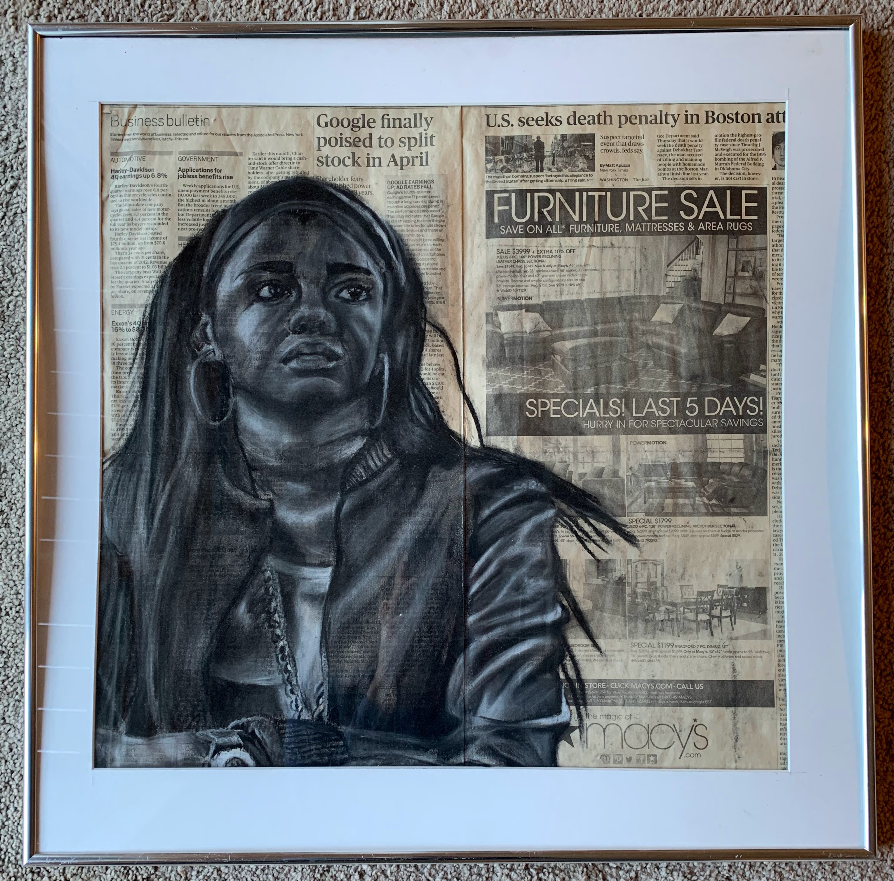

content warning: this project includes discussions of transphobia, sexual assault, and colonial violence.
This project looks to investigate the relationship between artistic creativity and genderqueerness.
As visual artist Graeson Dwyer put it:
Having that kind of visual media, before I was even consciously aware of the fact that I am a genderqueer person, I was able to express it.
Even Oxford Dictionary has begun to recognise the complexity of gender identity. Gender is defined as:
“Either of the two sexes (male and female), especially when considered with reference to social and cultural differences rather than biological ones. The term is also used more broadly to denote a range of identities that do not correspond to established ideas of male and female.”
The artists interviewed for this project have spent years exploring and solidyfing their own gender identities. For these creatives, their gender expression and how they present themselves to the world is its own creative project.
Here's what they had to say about it.
For these artists, identity and creativity are inherently intertwined. They are able to share unique and important perspectives through their work, but systemic oppression can be a limiting factor.
Here's what these artists would like to see in a better world for trans and genderqueer people:
If you'd like to be part of making that better world a reality, learn more about trans advocacy in the UK from Shon Faye's The Transgender Issue or support the work of these organisations.
graeson dwyer, danica earthen, and jean-paul weaver for contributing to the project
david lancaster, rakesh mohindra, lisa cazzato vieyra, charles carroll, and simon woolcott for instruction and critique
david freeman, christopher wilding, hasan matar, and simon westgate for instruction, equipment training, and advice
romily yang, peggy shen, and andiana caceres-martinez for modeling and studio support
my coursemates in disLAB and the moving with the camera seminar for advice and critique